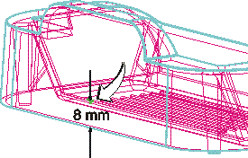
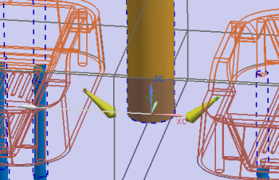

添加浇口
您将在离分型面8 mm，沿部件背面中心方向处添加一个潜伏(Submarine)浇口。

-
点击注塑模向导工具条上的浇口库 。
-
在浇口设计对话框的平衡组中，选择是。
-
在位置组中，选择型腔。
-
从类型列表中选择隧道(tunnel)。
-
点击浇口点表示。
其中一个产品子装配将成为工作部件。
-
在装配导航器中，取消选中 cardholder_dm_037旁的复选框以隐藏该子装配。
-
在浇口点对话框中，点击点在面上。
-
使用快速拾取对话框来选择工作部件的分型组件中盘面背部上较大的面。

-
在面上点的移动对话框中，在 Z 输入框中键入8并回车。
点将移动至离分型面8 mm 高的位置。
-
点击确定。
-
在浇口点对话框中，点击返回。
-
在浇口设计对话框中的编辑框中，更改或者确认下列表达式的值。(每次更改后进行回车！)
d
1
A
15
B
40
HD
11
OFFSET
1
-
点击应用。
-
在工作部件中，指出您刚刚创建的浇口点。
您可以过滤点的选择，在选择条上选择现有的点。
-
在矢量对话框中，指出与材料流入部件相匹配的方向，然后点击确定。

如果浇口方向不正确，您可以点击删除浇口来移除它，而不用关闭浇口设计对话框，然后使用您已经设置的参数来在相反方向创建另一个。
-
点击取消。
-
选择文件→全部保存。